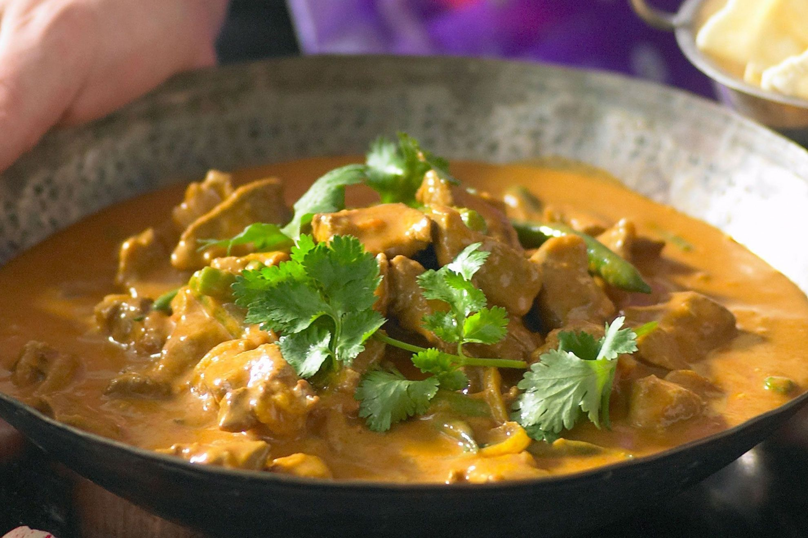

Lamb Korma

Description
An Indian classic, Lamb Korma has been a staple of the British pallet for decades.
This mild curry is not to be overlooked, just because it isn't hot doesn't mean it
isn't packed with spices and flavour. Read below for a chance to learn how to make
this dish at your next dinner party.
Ingredients
- 2 tbsp vegetable oil
- 1 onion, sliced
- 2 garlic cloves, crushed
- 2 tsp grated ginger
- 1kg boneless lamb shoulder, trimmed, cubed
- 1/3 cup korma curry paste
- 400g can diced tomatoes
- 400mL can coconut cream
- 1/2 cup water or beef stock
- 150kg green beans, trimmed, halved
- Coriander leaves, to serve
- Poppadoms, to serve
Steps
- Heat the oil up in a saucepan. Fry the onions until translucent. Add garlic and ginger. Fry for 1 minute.
- Add the lamb. Stir, ensuring the meat is sealed, and cook for a further 5 minutes. Add the curry paste and
cook on a low heat. Stir until fragrant.
- Stir in the tomatoes, coconut cream and stock. Boil at a high temperature. Cover, and simmer for one hour until lamb is tender.
- Stir in the beans and simmer for 5 minutes. They should be tender.
- Garnish with Coriander leaves and serve with Poppadoms